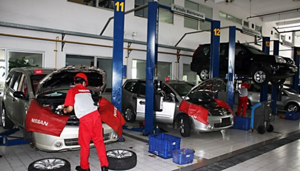
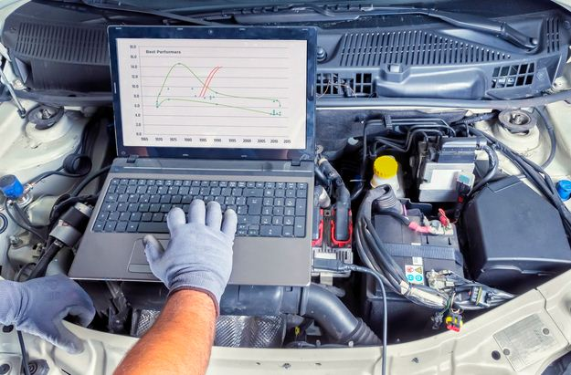

Servis Besar
Adapun beberapa komponen yang biasanya akan diperikasa atau diganti jikakondisinya sudah tak layak, meliputi.
- Pembersihan pada intake manifold.
- Penyetelan klep pada mobil yang klepnya masih manual.
- Pemeriksaan kondisi rem mobil.
- Pengecekan kopling.
- Pemeriksaan bagian radiator.
- Pemeriksaan sistem kelistrikan pada mobil.
- Melihat kondisi sistem bahan bakar.


Servis Ringan
Adapun beberapa komponen yang biasanya akan diperikasa atau diganti jikakondisinya sudah tak layak, meliputi.
- Oli mesin, trasmisi, hingga gardan diganti dengan yang baru.
- Filter oli turut diganti pula.
Servis berkala mobil
- 1 bulan atau 1.000 km.
- 6 bulan atau 10.000 km.
- 10 bulan atau 50.000 km.
- 15 bulan atau 100.000 km.
- Pemeriksaan baut baut pada kaki kaki mobil.
- Pengecekan busi dan kabel pada busi.


Body Repair
Membuat mobil anda seperti baru lagi dengan harga oke kualitas juga oke.Servis berkala mobil
- Harga Per panel Rp 300.000.
(Standart Panel Pintu, Spakbor/Fender, Bumper, Sidekirt dan Spoiler/Wing). - Kap Mesin & Bagasi Rp 400.000.
- Atap Mobil Rp 500.000 – Rp 800.000 .
- Kabin Atas Rp 650.000.
- Kap Bagasi Rp 350.000.
- Pintu Per-Panel Rp 350.000.
- Fender Per-Panel Rp 350.000.
- Bemper Depan Rp 350.000.